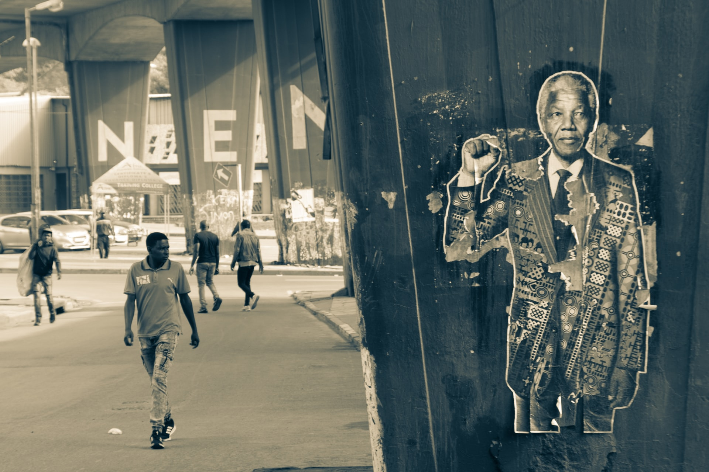

‟
Zindzi você e talvez até a mamãe vocês devem pensar não sem razão que o magistrado que nos tratou com aquela falta de humanidade e mesquinharia tão horríveis é um homem cruel, ele sem dúvida também tem mulher e filhos e provavelmente tem consciência da ferida que essa separação forçada entre o papai e a mamãe provoca, já que ele nos nega o prazer de nos vermos, contudo eu sei que esse homem está longe de ser cruel ao contrario dentre dos limites impostos por certos hábitos agora reinantes em nosso país, ele é gentil e educado e com toda sinceridade eu o considere-o um cavaleiro.
” - Nelson Mandela
O que é o Ubuntu ?
Photo by Avel Chuklanov on Unsplash
Ubuntu é uma das primeiras filosofia que surgiu na Africa com os povos Bantus, a filosofia foi bem desenvolvida pelo povo Zulu que mora na África do Sul, o seu nome, Ubuntu, é a junção de duas palavras Ubu e ntu, Ubu é geralmente traduzido como existência, enquanto ntu é quando a existência assume uma forma concreta, a palavra como um todo geralmente é traduzida para português como "Eu sou porque você é" ou "humanidade para com os outros", quem define o conceito de Ubuntu é o filósofo Mogobe B. Ramose no livro "A Filosofia do Ubuntu e Ubuntu Como Uma Filosofia".
Mas sobre do que se trata o Ubuntu ?
 Photo by Aarón Blanco Tejedor on Unsplash
Photo by Aarón Blanco Tejedor on Unsplash
A ideia principal do Ubuntu é uma sociedade formada pelo respeito, solidariedade e empatia uma sociedade em que somos dependentes um dos outros, assim como órgãos do nosso corpo, para ela, não há vantagem nem coisas boas no ódio. Desmond Mpilo Tutu ( Ganhador do Prêmio Nobel da Paz de 1984 ) definiu o Ubuntu como uma filosofia de resolução de conflitos, o Ubuntu se trata de pessoas e como conviver em sociedade, Mogobe acreditava que Ubuntu era uma característica da alma, Astère Simbare é um dos entrevistados no documentário "Ubutun - I am because i belong" da Netfor God diz que na sua linguá, eles comumente se referem a uma pessoa como Ubuntu quando essa pessoa prática a compaixão e o cuidado com o próximo, na bíblia, em versão Kirundi, a palavra Ubuntu aparece constantemente para falar do amor gratuito de Deus.
Nelson Mandela e sua importância para o Ubuntu e para a África do Sul
 Photo by Gregory Fullard on Unsplash
Nos anos 60 a África do Sul vivia uma extrema segregação racial graças ao Apartheid, o Apartheid privilegiava a elite branca que era descendentes de Europeus geralmente Holandeses e excluía os negros dos espaços públicos da educação e posto de trabalho, o sistema estava sendo abolido graças aos protestos, um dos lideres protestantes era Nelson Mandela um dos maiores difundidores do Ubuntu. Mandela era advogado e lutava por meio da luta não violenta, depois do massacre de Sharpeville, ele fundou o braço militar do CNA, em 1961 que realiza uma campanha de sabotagem contra instalações públicas e militares. Em 05 de agosto ele foi preso por 27 anos, antes de entrar na cadeia ele era a favor da violência para conquistar aquilo que considerava justo, porem na cadeia ele cada vez mais se identificava com o Ubuntu e começou a ver cada pessoa com um olhar positivo ate mesmo seus adversários, está é carta que ele escreveu na cadeia para a sua filha mais nova:
Apos sair da prisão Mandela foi eleito a presidente e vencedor do Prêmio Nobel da Paz de 1993, abolindo o Apartheid. Mandela queria transformar seu adversário em parceiro e fazer com que a sua vitoria fosse a vitoria do outro para que não houvesse perdedores ou ao menos humilhados, ele dizia que precisávamos confiar nos outros para que eles retribuísse essa confiança para ensinar que a reconciliação não é ignorar o passado cruel, mas sim enfrentar-lo com verdade e inclusão.
Caso Lulu Thompson
Mandela, quando estava no seu mandato, criou um espaço para que criminosos se desculpa-se com as pessoas como um todo. Dentre essas pessoas que cometeram as atrocidades havia um grupo que admitiram terem matado o filho de Lulu, a lamina e a tiros, pedindo perdão a mãe, ela perdoou eles, porque ela acreditava que guardar as magoas não era bom para eles e muito menos para ela.
Objetivo Ubuntu
O objetivo da filosofia é criar e manter uma sociedade que engloba todos pelo ajuda, e sempre visa a superação de diferenças e de preconceitos sejam elas quais forem pela orientação sexual, cor de pele, religião, orientação sexual ou classe, o Ubuntu ressalta a importância de criamos uma sociedade importante para todos em que todos importam, a palavra Simunye que significa "Nós somos um " combina bastante com essa ideia que é criada de varias lutas enfrentadas contra os regimes que excluía o direito e cidadania dos negros.